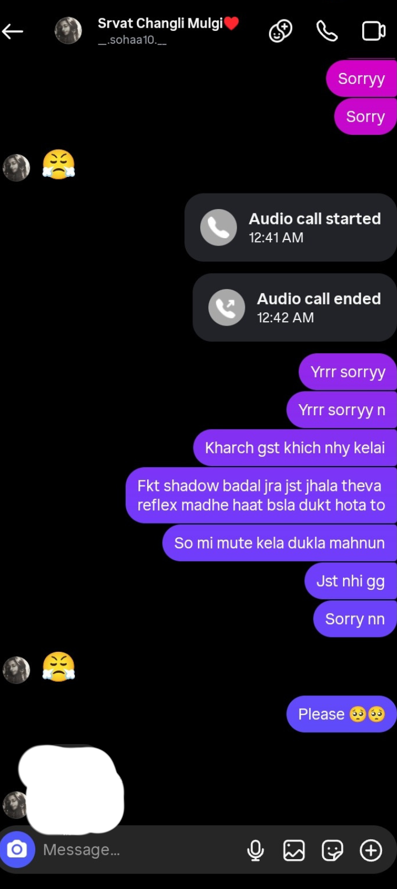
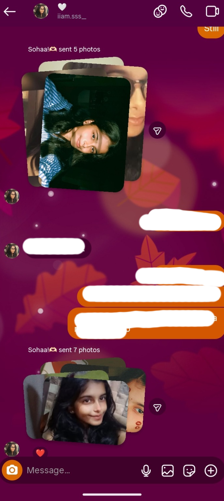

Things I Miss 🌙
Not complaints.
Just moments that quietly stayed.
I miss the moments jo kabhi sense hi nahi banate the —
par phir bhi sabse zyada apne lagte the.
Calls jo bina kisi reason ke hote the.
Kabhi baat kam hoti thi,
par dil ka noise shant ho jaata tha.
Shayari si baat hai —
“Kuch awaazein lafzon se zyada bol jaati hain,
aur kuch calls, bas sukoon ban jaate hain.”
Kabhi baat kam hoti thi,
par dil ka noise shant ho jaata tha.
Shayari si baat hai —
“Kuch awaazein lafzon se zyada bol jaati hain,
aur kuch calls, bas sukoon ban jaate hain.”

Voice notes shayad chhote the,
par unmein ek poora din chhupa hota tha.
Kabhi hasi, kabhi calm,
par hamesha apnapan.
“Kuch awaazon ka volume kam hota hai,
par unka asar bohot gehra hota hai.”
par unmein ek poora din chhupa hota tha.
Kabhi hasi, kabhi calm,
par hamesha apnapan.
“Kuch awaazon ka volume kam hota hai,
par unka asar bohot gehra hota hai.”

Woh moments jo kabhi sense hi nahi banate the.
Random baatein, bekaar hasi,
aur bina wajah ke late replies.
Shayad duniya ke liye nonsense the,
par mere liye wahi sabse real the.
“Har cheez ka matlab ho, zaroori nahi,
kuch lamhe bas mehsoos karne ke liye hote hain.”
Random baatein, bekaar hasi,
aur bina wajah ke late replies.
Shayad duniya ke liye nonsense the,
par mere liye wahi sabse real the.
“Har cheez ka matlab ho, zaroori nahi,
kuch lamhe bas mehsoos karne ke liye hote hain.”

Jab tu gussa hoti thi 😤
thoda sa drama, thodi si zidd,
aur main chup-chaap sab sun leta tha.
Kyunki pata hota tha —
gussa temporary hai,
par tu important hai.
“Gusse ke shor mein bhi ek pyaari si baat thi,
kyunki narazgi bhi apnapan dikha jaati thi.”
thoda sa drama, thodi si zidd,
aur main chup-chaap sab sun leta tha.
Kyunki pata hota tha —
gussa temporary hai,
par tu important hai.
“Gusse ke shor mein bhi ek pyaari si baat thi,
kyunki narazgi bhi apnapan dikha jaati thi.”

Random pics.
Koi explanation nahi,
koi caption nahi.
Bas ek chhota sa moment share karna.
Shayad kehna tha —
“Main hoon. Aur tu yaad aaya.”
“Kuch tasveerein yaadein nahi hoti,
wo sirf ehsaas hoti hain.”
Koi explanation nahi,
koi caption nahi.
Bas ek chhota sa moment share karna.
Shayad kehna tha —
“Main hoon. Aur tu yaad aaya.”
“Kuch tasveerein yaadein nahi hoti,
wo sirf ehsaas hoti hain.”

Waqt nahi hai — ye line samajh aati hai.
Par jab koi apna hota hai, toh thoda sa waqt apne aap nikal hi jaata hai. —
Bas ye jaan’na hai — 2026 mein
bhi us ‘apne’ mein aata hoon?
“Waqt sab kuch nahi badalta,
par kabhi kabhi cheezein dobara samajhne ka mauka de deta hai.”